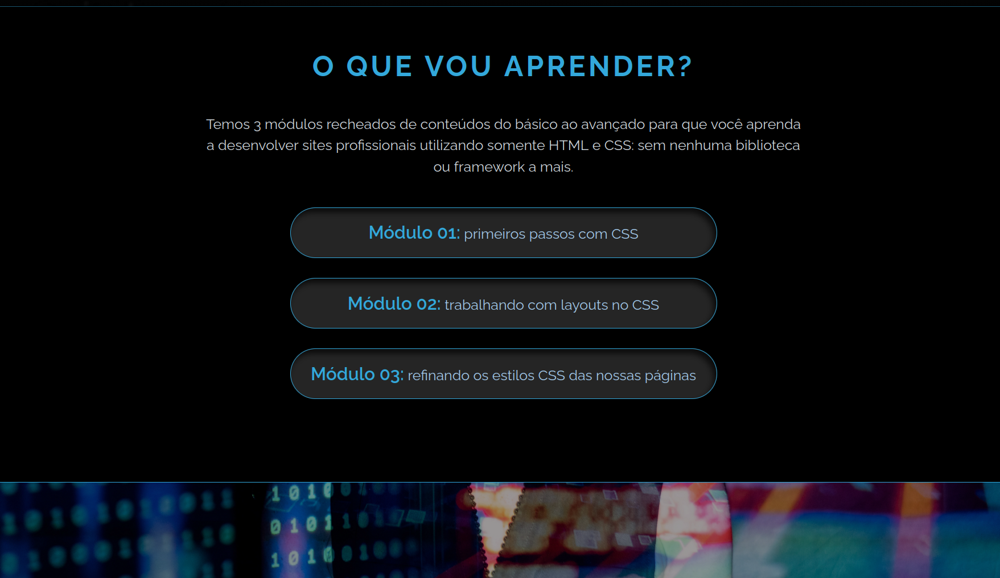
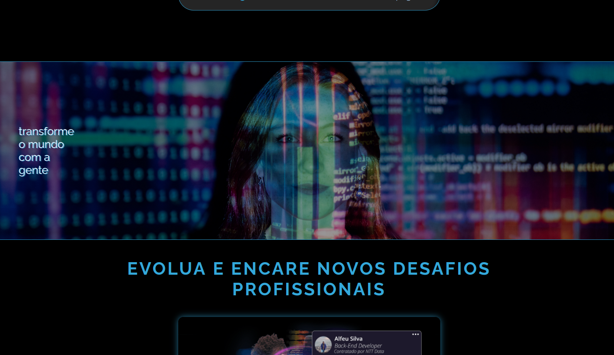
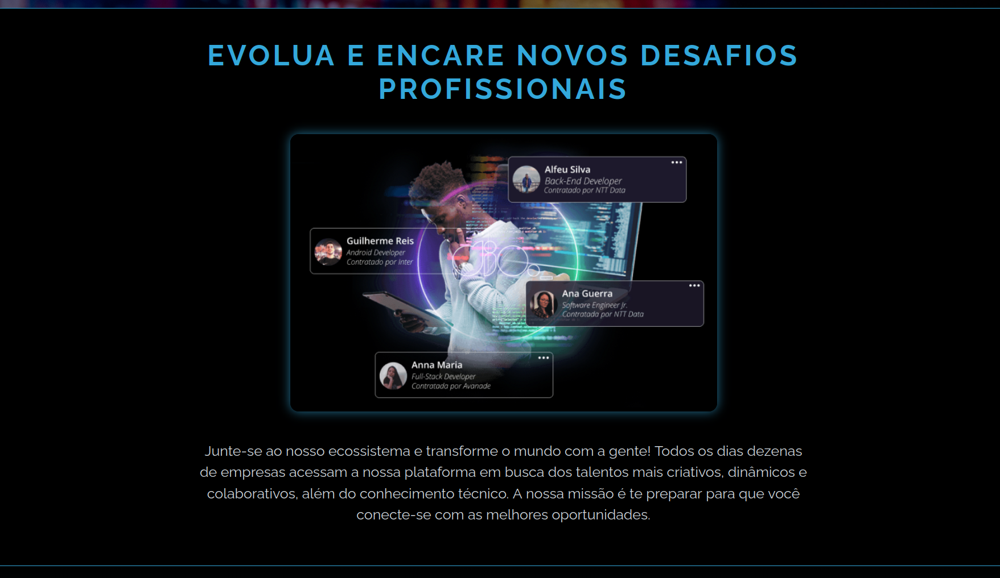
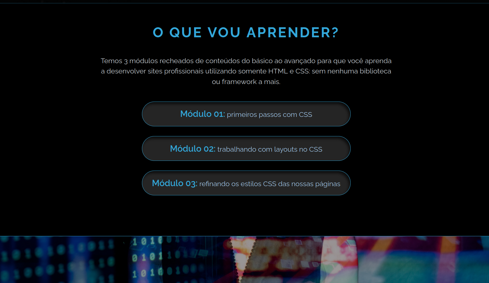
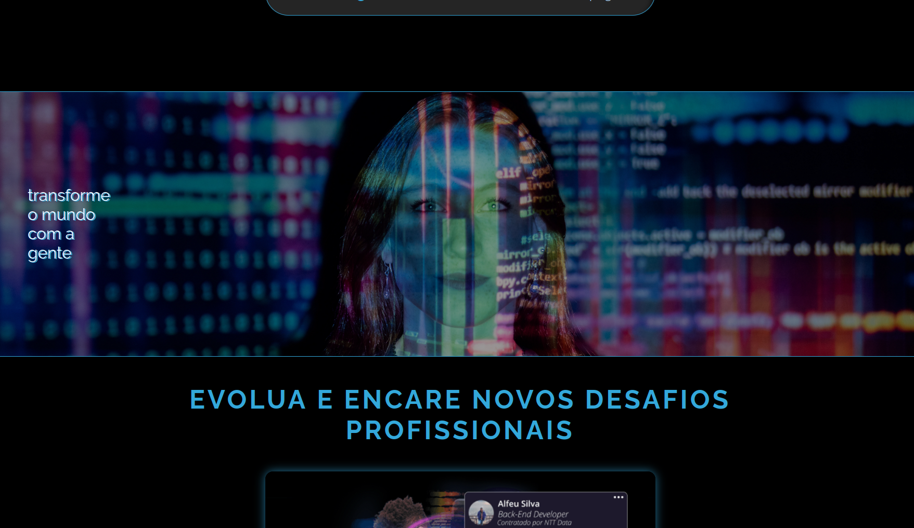
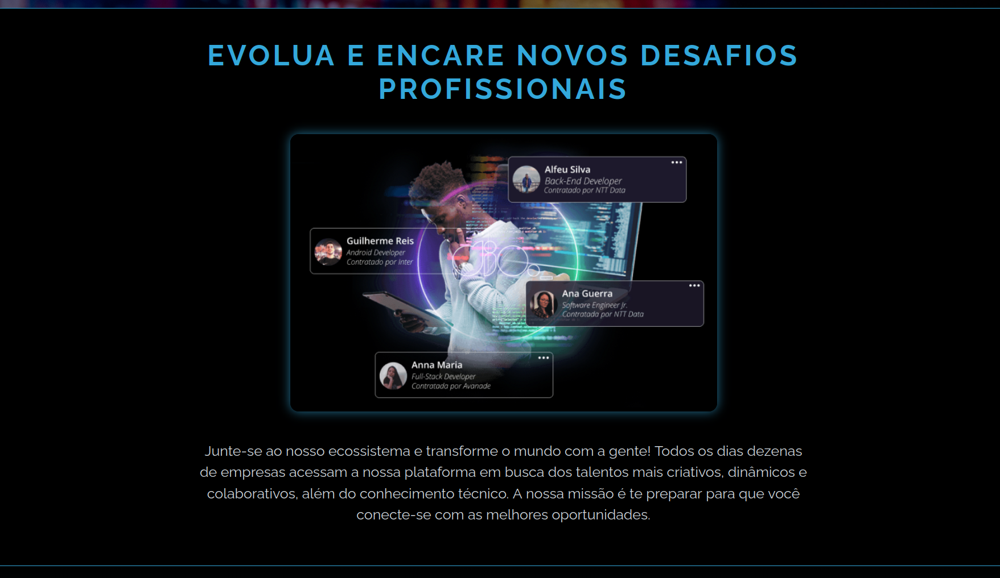

Landing Page - Trilha CSS DIO
 





Description
Projet réalisé dans le cadre de la formation Digital Innovation One (DIO), cette landing page m’a permis d’approfondir mes connaissances en CSS avancé, notamment les dégradés de texte avec background-clip, l’utilisation de Flexbox, la conception responsive, tout en respectant l’accessibilité et la sémantique HTML5.
Informations
- Durée : 1 mois
- Type : Formation en ligne
- Technologies : HTML5, CSS3
Fonctionnalités
- Design responsive avec media queries
- Effets de dégradés de texte avancés
- Utilisation de Flexbox pour la mise en page
- Bonne pratique d’accessibilité et sémantique HTML
Outils
- Figma pour la conception graphique
- Visual Studio Code pour le développement
- GitHub pour la gestion des versions et hébergement